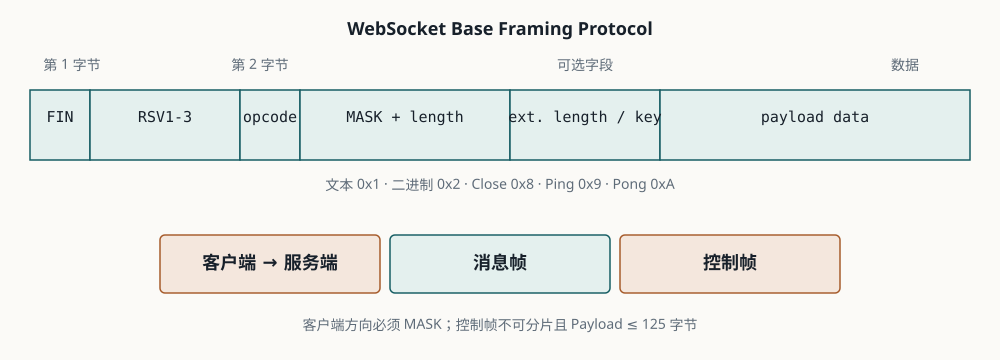

Lesson 0002 · Protocol
握手之后：读懂 WebSocket 帧
本课的唯一目标：看到一段 WebSocket 帧数据时，你能判断它是文本、控制帧还是分片，并能解释连接如何关闭。
101 Switching Protocols 只代表协议切换成功。之后的通信进入 WebSocket 帧阶段，不再是一个个独立的 HTTP 请求。
1. 消息不是帧
业务上说的“发送一条消息”，在协议层可能由一个或多个帧组成。短文本通常是一条完整帧；较大的消息可以被拆成多条帧，最后一帧通过 FIN=1 表示消息结束。
| 概念 | 回答的问题 |
|---|---|
| 消息（message） | 业务层收到的完整文本或二进制内容是什么？ |
| 帧（frame） | 协议层如何分段、标记类型并传输这段内容？ |
| 控制帧（control frame） | 连接层是否需要 Ping、Pong 或 Close？ |
2. 帧的骨架

0 1 2 3 0 1 2 3 4 5 6 7 8 9 0 1 2 3 4 5 6 7 8 9 0 1 2 3 4 5 6 7 +-+-+-+-+-------+-+-------------+-------------------------------+ |F|R|R|R| opcode|M| Payload len | Extended length / Mask / Data | |I|S|S|S| |A| | | |N|V|V|V| |S| | | +-+-+-+-+-------+-+-------------+-------------------------------+
| 字段 | 作用 |
|---|---|
FIN | 是否是这条消息的最后一帧。1 表示结束。 |
RSV1-3 | 扩展保留位。没有协商扩展时应为 0。 |
opcode | 标识帧类型：文本、二进制、Continuation、Close、Ping 或 Pong。 |
MASK | 是否带掩码。客户端发往服务端的帧必须掩码。 |
Payload length | Payload 的长度；较长内容会使用扩展长度字段。 |
Masking key | MASK 为 1 时存在，用于对 Payload 做异或。 |
Payload data | 实际的文本、二进制或控制数据。 |
wss://。
3. 常见 opcode
| opcode | 类型 | 用途 |
|---|---|---|
0x0 | Continuation | 延续一条被分片的消息。 |
0x1 | Text | UTF-8 文本消息。 |
0x2 | Binary | 二进制消息。 |
0x8 | Close | 开始或响应关闭握手。 |
0x9 | Ping | 请求对端尽快回复 Pong。 |
0xA | Pong | 响应 Ping，或作为探活信息。 |
控制帧不能被分片，Payload 长度不能超过 125 字节。浏览器的 JavaScript WebSocket API 通常不会直接暴露发送 Ping 的方法；服务端或基础设施可以负责协议级 Ping，业务代码也常使用带时间戳的业务心跳。
3.1 子协议、扩展和关闭码
握手阶段还可以协商两个容易被忽略的能力：
Sec-WebSocket-Protocol用于协商应用层子协议，例如 STOMP；它决定消息语义，不改变底层帧格式。Sec-WebSocket-Extensions用于协商协议扩展，例如permessage-deflate；压缩会节省带宽，但会增加 CPU 和排错复杂度。
Close 帧还可以携带关闭码。常见含义包括：1000 正常关闭、1001 对端离开、1002 协议错误、1003 不支持的数据类型、1008 策略拒绝、1011 服务端异常。重连策略必须结合关闭码，不应对所有断开都无限重连。
4. 手工解读两条帧
第一条帧：
81 05 48 65 6c 6c 6f
0x81 表示 FIN=1、opcode=1，即一条完整文本消息；0x05 表示未掩码且长度为 5；Payload 是 ASCII 文本 Hello。
第二条帧：
81 85 37 fa 21 3d 7f 9f 4d 51 58
0x85 表示 FIN=1、文本帧、MASK=1、Payload 长度为 5。接下来的 4 个字节 37 fa 21 3d 是 Masking Key，后面的 5 个字节需要逐字节异或还原为 Hello。
5. 连接生命周期
浏览器 WebSocket 对象的 readyState 用四个状态表达生命周期：
| 状态 | 含义 | 常见动作 |
|---|---|---|
CONNECTING | 正在建立连接。 | 等待握手结果，不发送业务消息。 |
OPEN | 握手完成，可以通信。 | 发送和接收消息。 |
CLOSING | 关闭握手已经开始。 | 停止接受新的业务发送。 |
CLOSED | 连接已经关闭。 | 判断是否需要重连和清理资源。 |
正常关闭不是简单地断开 TCP：一方发送 Close 帧，另一方回复 Close 帧，随后连接关闭。异常断网、进程崩溃或代理超时可能没有机会完成这个关闭握手，因此服务端仍需要清理连接状态。
6. 练习：先回忆，再验证
不查资料，回答下面 5 个问题。答案可以点击展开，但建议先自己写：
-
为什么“一条业务消息”不一定对应“一条 WebSocket 帧”？
查看答案
消息可能因为长度被分片传输，由多个帧组成。第一帧带文本或二进制 opcode，中间帧使用 Continuation，最后一帧通过
FIN=1标记消息结束。 -
客户端发给服务端的帧为什么必须掩码？掩码是否等于加密？
查看答案
这是 RFC 规定的方向性协议要求，用来避免某些代理把可控数据误认为缓存或请求。掩码只是异或变换，不提供保密性；需要保密时使用 TLS，也就是
wss://。 -
Ping/Pong、业务心跳和 TCP keepalive 分别处于什么层次？查看答案
Ping/Pong 是 WebSocket 协议层控制帧；业务心跳是应用层消息；TCP keepalive 是传输层探测。它们的触发方式、可见位置和能发现的问题不同，不能简单互相替代。
-
为什么服务端不能只在收到 Close 帧时清理会话？
查看答案
断网、进程崩溃或代理超时可能导致连接直接消失，没有机会发送 Close 帧。服务端还需要结合底层断开事件、读写超时和心跳检测，最终清理连接状态。
-
Sec-WebSocket-Protocol和Sec-WebSocket-Extensions分别解决什么问题？查看答案
Protocol 用于协商应用层消息语义，例如 STOMP；Extensions 用于协商压缩等协议扩展，例如
permessage-deflate。前者改变应用层约定，后者改变协议处理能力和成本。
快速检查：十六进制帧头 0x81 表示什么？